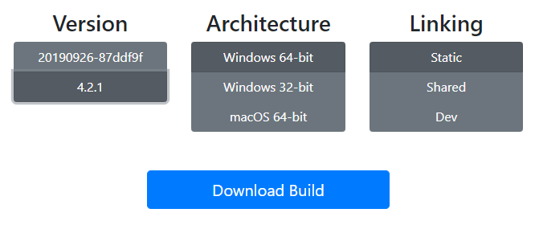

最近更新: 1.6.9
运行平台: Windows 7/8.1/10
蓝奏云下载 密码: ffgui
百度云下载 提取码: 8875
注意 FFGUI 只是一个适用于 FFmpeg 的脚本生成器, 本身并不包含媒体转码功能. 请从 这里 下载 FFmpeg, 解压后再把 ffgui.exe 和 ffmpeg.exe 放置在同一文件夹下.
进入网站首页后点击 "Download" 按钮, 选择 "Windows 徽标", 再点击下面的 "Windows Builds".
根据操作系统位数选择对应的下载链接. 32 位系统下载 "Windows 32-bit" 版本, 64 位系统下载 "Windows 64-bit" 版本. 对于 64 位系统虽然两个版本都能正常运行, 但是使用对应的 64 位版本能得到大约 10% 的速度提升. 如果你不确定自己的操作系统位数, 请下载 32 位版本.
链接方式建议选择静态链接 (Static Linking). 得到的是单个可执行文件而不是附带一大堆动态链接库.

视频压制的目的通常是在保证画质的前提下尽量减小文件体积.
点击 "打开" 选择视频源文件 (或者直接拖动文件到窗口内), 设置各种输出文件参数, (修改输出文件名后) 点击 "执行" 开始压制.
单独勾选 视频/音频 的 "启用" 选项框可以分离 视频/音频. 视频/音频 编码器选择 copy 时不做处理直接复制源文件的内容.
本软件支持的视频封装格式包括 flv mp4 avi mov mkv, 音频格式包括 aac mp3.
本软件包含实验性质的 NVENC 显卡转码功能, 虽然速度很快但是同码率下的画质相比 x264 略差.
x264 有两种常用码率控制模式: crf / 2pass. crf 模式根据片子质量自动分配码率, 一遍编码. 无法得知成品的最终码率. 参数可用值从 1 到 51, 越小编码质量越好, 码率越高. 默认 23.5, 可为浮点数, 一般用 18-27. 2pass 模式可以精确的得到想要的平均码率, 需要做两次编码. 第一遍编码 x264 先分析全片生成中间文件, 第二遍编码以临时文件作参考分配合理的码率. 需要特定的平均码率或文件大小时一定要用 2pass 编码.
预设 preset 的值包括 ultrafast superfast veryfast faster fast medium slow slower veryslow placebo. 编码速度从快到慢, 压缩效率由低到高. 码率相同时编码速度越快画质会相应地变差, 应该设置为所能接受的最慢的一个, 常用 veryslow, 嫌慢的话可以下调到 slower slow 或者 medium.
视频是由连续的图片构成的, 每一张图片称为一帧. 图片是由一个个像素点构成的, 视频的分辨率就是每一帧图片的分辨率. 分辨率越大视频的画面大小越大. 压制时分辨率应该设置为和原视频相同或者等比例缩放, 例如 800x600 可以拉伸为 480x360 或者 960x720 或者 1440x1080.
视频每一秒闪过的图片数量称为这个视频的帧率. 常见的帧率有 24, 30, 60 等等. 帧率越高视频看上去越流畅. 压制时帧率应该设置为和原视频相同.
单位时间内用来记录视频的数据量称为码率, 视频的平均码率即文件总体积除以总时长. (相同时长下)码率越高的视频用来记录视频的数据量越多, 一般可以理解成视频画质越好. (用低码率视频压制成高码率视频填充的是垃圾数据, 并不能提升画质.)
目前 (2019年中) 哔哩哔哩的清晰度根据 分辨率/码率/帧率 分为以下几档: (1080P+ / 720P60 / 1080P60 只有大会员用户才能观看.)
1080P60 6000 60
720P60 3000 60
1080P+ 6000 30
1080P 3000 30
720P 2000 30
480P 900 30
360P 400 30
对于 pvz 视频避免被二压的建议最高码率:
720P (800x600 960x720): 2000kbps(30fps) 3000kbps(60fps)
1080P (1440x1080): 6000kbps(30/60fps)
关于音频:
编码常用 aac.
码率越高越好, 建议 128\~256 kbps.
频率 44100 或者 48000, 尽量和源文件相同.
声道立体声 (2 个声道).